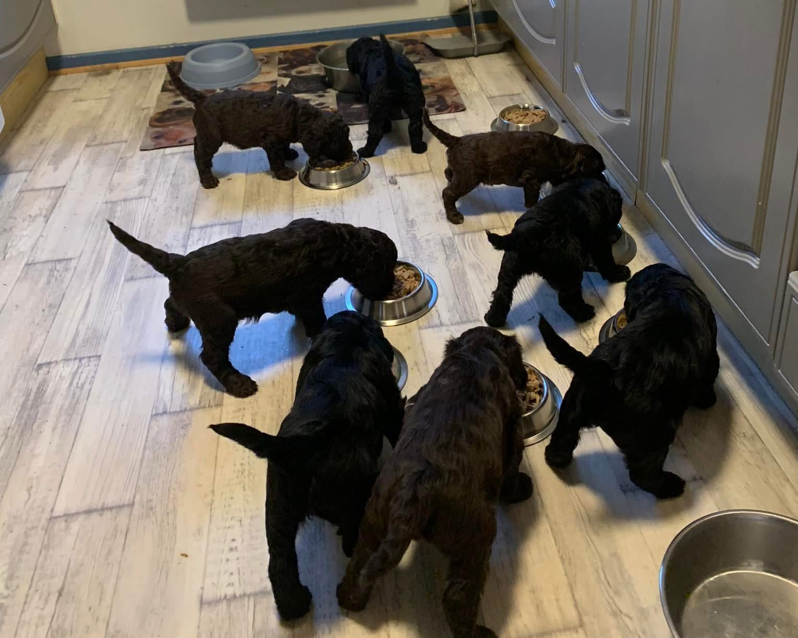
Kull 2023
Om kullet
Vega fikk vårt første kull med Barbet-valper i 2023, hele 8 valper! Vi er utrolig stolte av dem. Bilder fra kullet finner du i galleriet under.
Kontakt oss →Barbet med hjerte og kvalitet
Vi er en liten familiedrevet kennel med lidenskap for rasen Barbet. Hos oss står helse, mentalitet og trygg oppvekst alltid i sentrum.
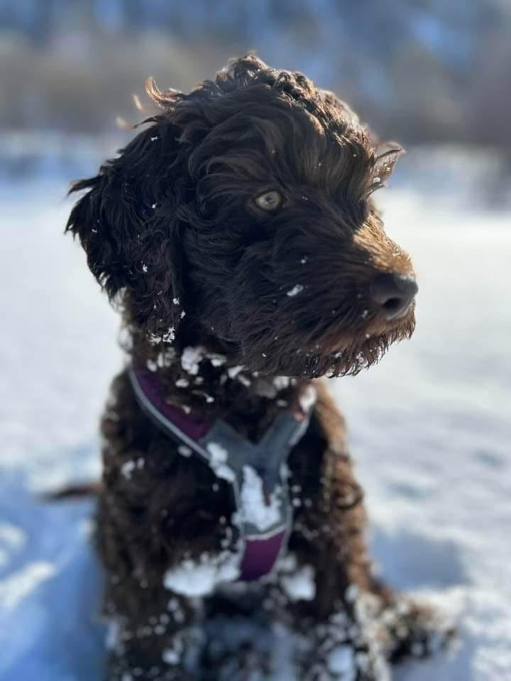
Om kennelen
Kennel Alattios holder til i Alta, og ble startet av oppdrettere med stor interesse for Barbet, en gammel fransk vannhund kjent for sitt varme gemytt, sin intelligens og sin karakteristiske krøllete pels.
Vi hadde vårt første og foreløpig eneste kull i 2023, og har planer om nye kull fremover. I tillegg til oppdrett satser vi på utstilling, og legger stor vekt på god helse og trygge omgivelser for både avlshunder og valper.
Alle våre avlshunder er en del av familien, og valpene våre vokser opp innendørs med tett kontakt med mennesker, lyder og hverdagssituasjoner fra første leveuke.
Rasen Barbet
Barbet er en gammel fransk vannhundrase, og regnes som en av stamrasene bak flere andre europeiske vannhunder og pudler. Navnet kommer fra det franske ordet "barbe", som betyr skjegg, og viser til rasens karakteristiske skjeggete snute.
Opprinnelig ble Barbet brukt til jakt og apportering av vannfugl. Den tette, krøllete og vannavstøtende pelsen gjør rasen til en dyktig svømmer, og mange Barbeter er fortsatt glad i vann den dag i dag.
Barbet er en fin og vennlig hund med et rolig og stabilt gemytt. Den er glad i mennesker, tilpasningsdyktig og trives godt både som familiehund og aktiv turkamerat.
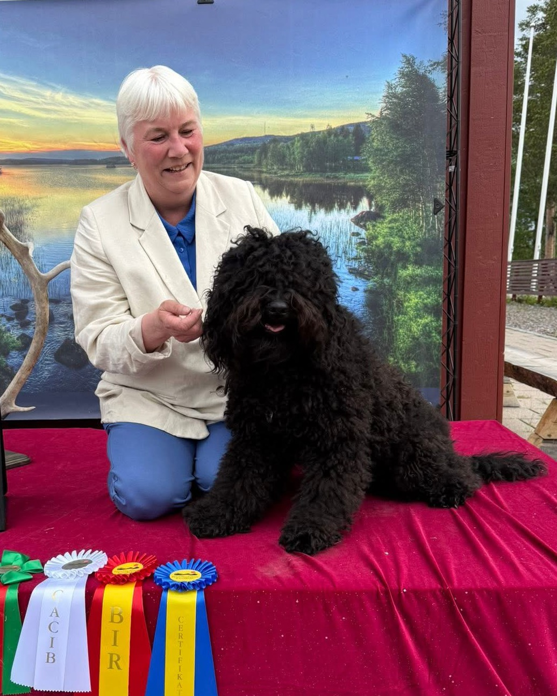
Valper & kull

Vega fikk vårt første kull med Barbet-valper i 2023, hele 8 valper! Vi er utrolig stolte av dem. Bilder fra kullet finner du i galleriet under.
Kontakt oss →Det vil oppdateres her dersom det kommer nytt kull. Dersom du har noen spørsmål finner du kontaktinfo under.
Kontakt oss →Galleri
Et lite utvalg av mamma og valpene fra kullet i 2023.
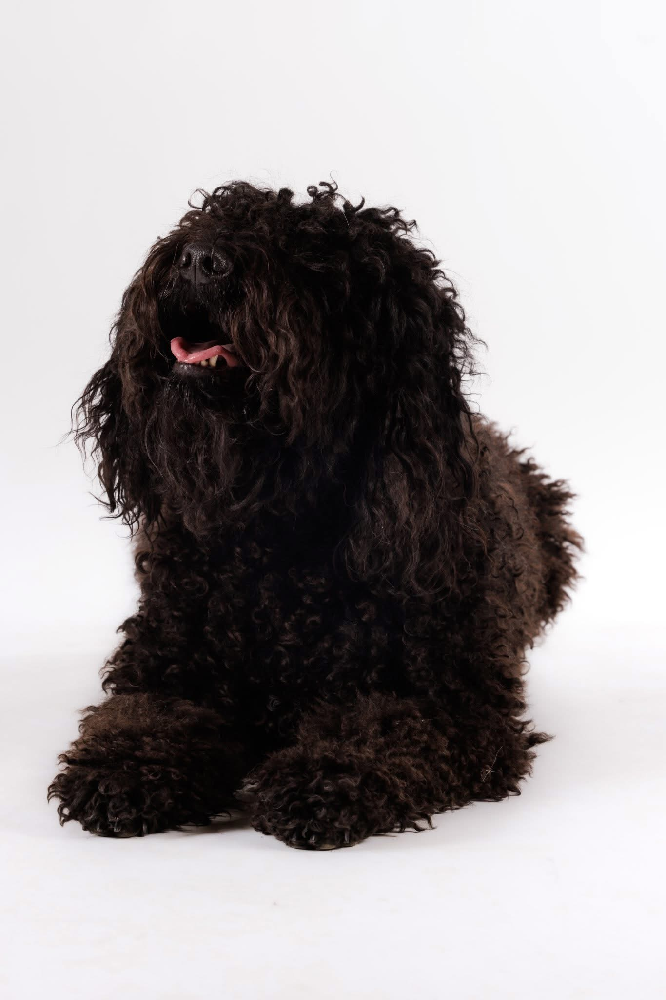
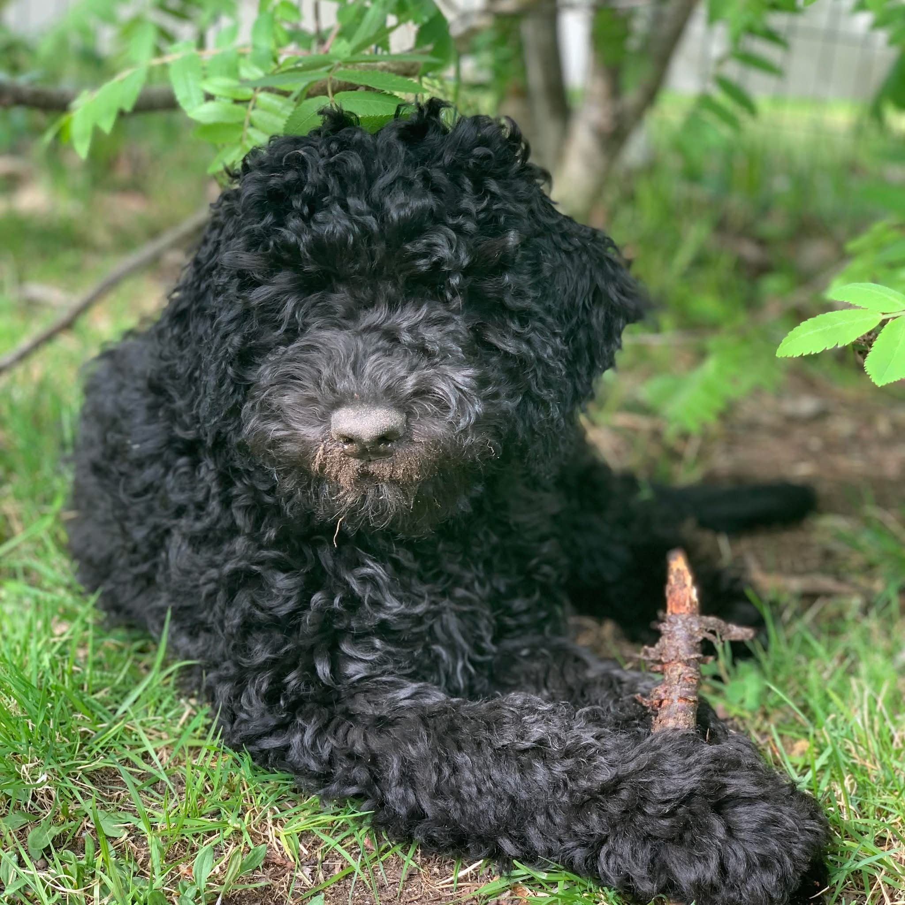
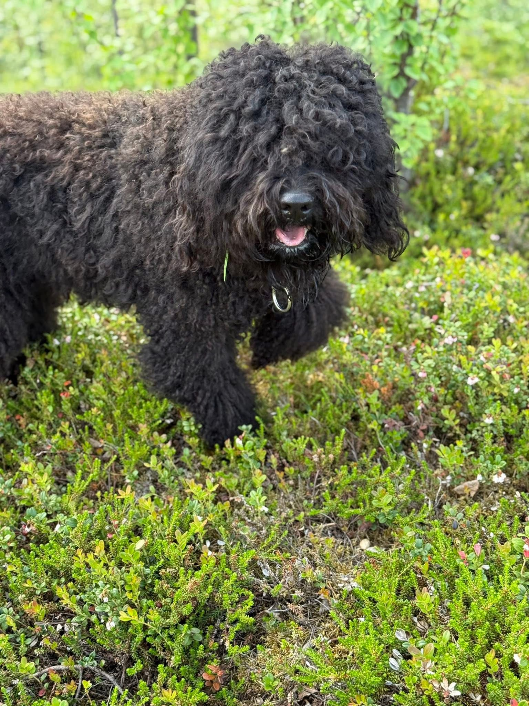
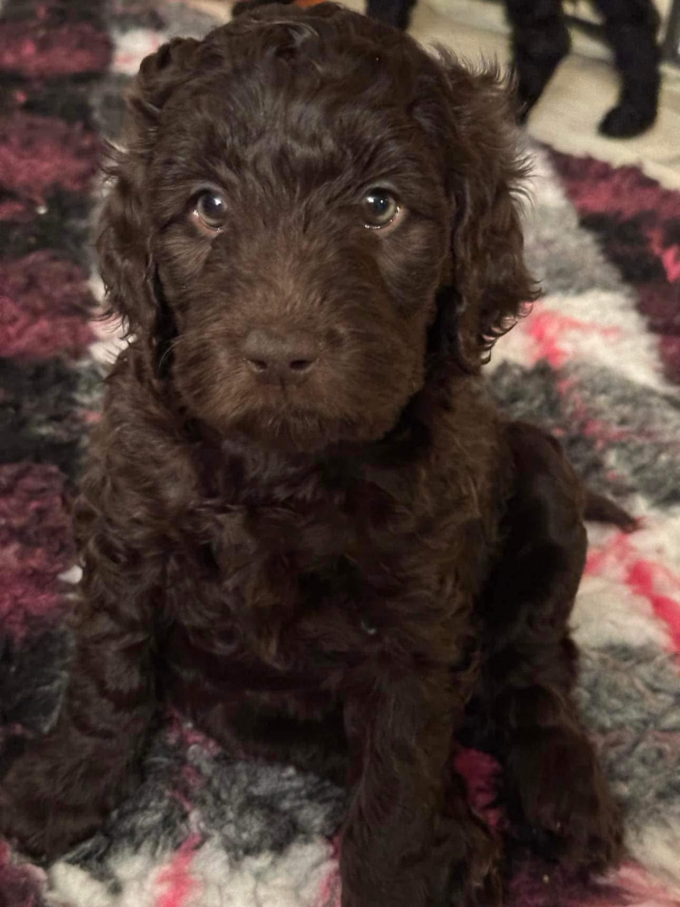
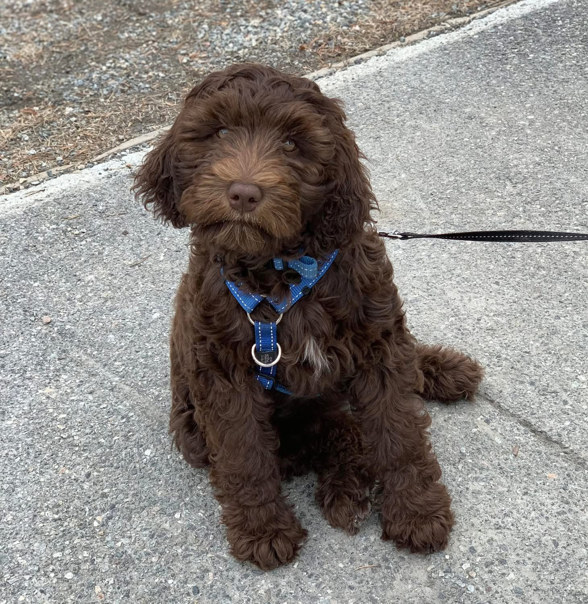
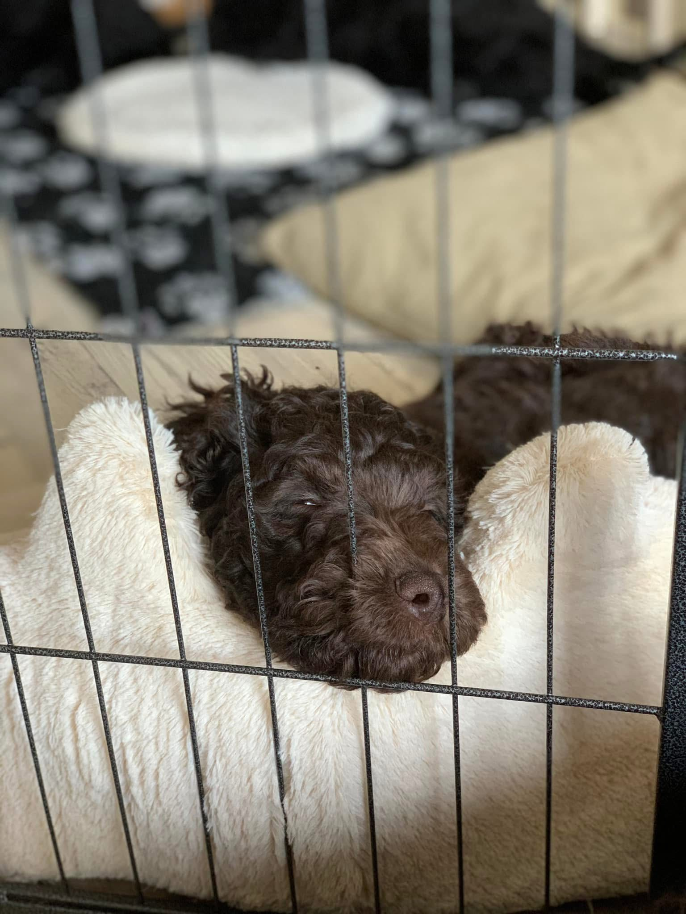

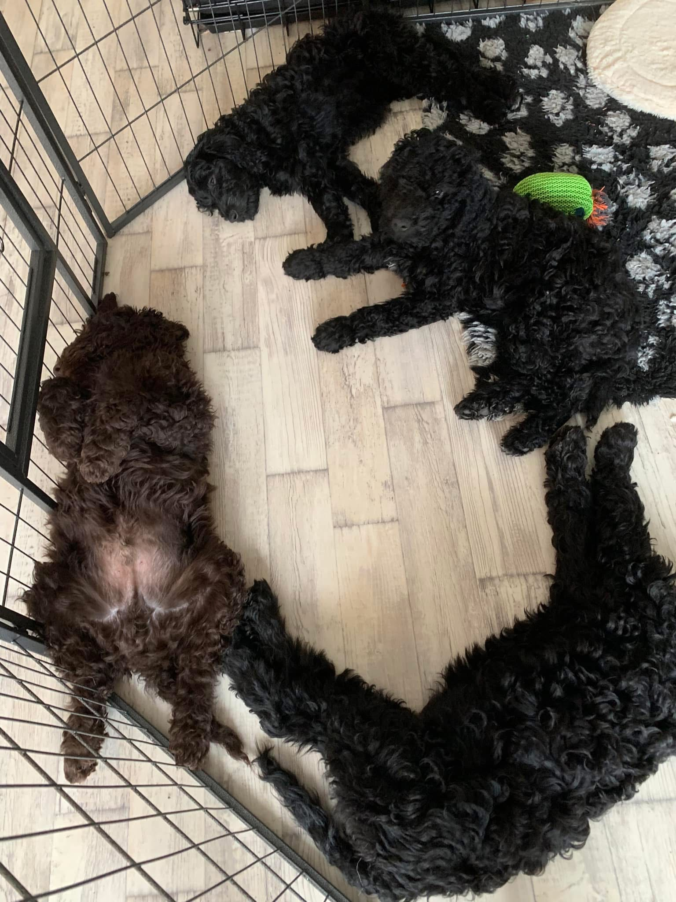
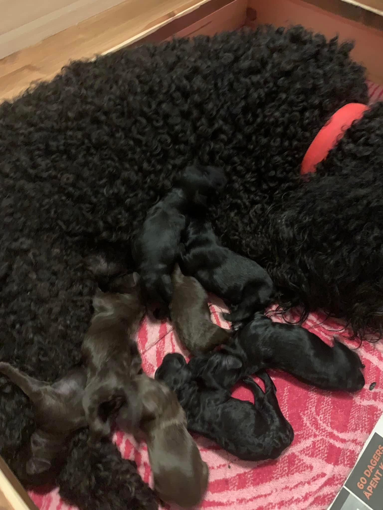
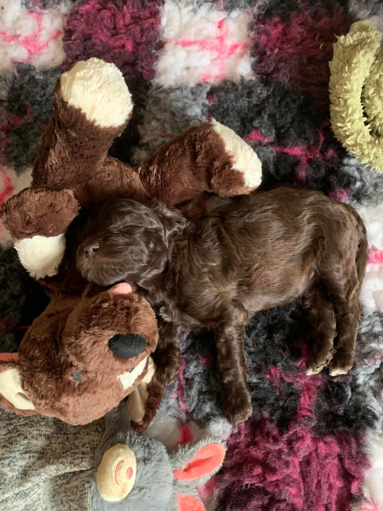
Kontakt
Har du spørsmål om rasen, våre hunder eller ønsker å stå på interesseliste for valp? Ta gjerne kontakt.